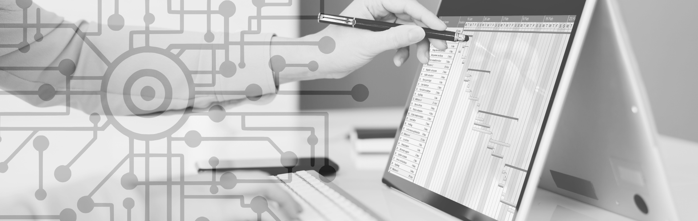

1. Resimizi
Mürekkebli kalem, yazı veya çizim için yüzeye, kağıda mürekkep uygulayan bir yazı aracıdır. Kamış kalemler, tüy kalemler, uçlu kalem ve yönetici kalemler küçük bir boşlukta az miktarda mürekkep tutur. Kalemin ucunu bir hokka içine daldırarak periyodik olarak yeniden doldurulması gerekiyordu.